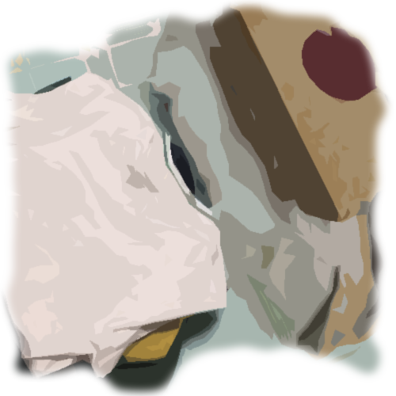

Accept
“I trust you,” you tell her.
Her face lights up, and turns serious. “We will need to move quickly. We can’t be certain they haven’t noticed your absence. I’ll get you something to get changed into.”
She goes to the back of the shop and comes back a few moments later with a change of clothes and a small rucksack. She pushes the clothes into your hands and packs up food from the kitchen into a lunch box. It is a simple loose cotton top and long skirt in monochrome. You move to the back room to get changed.
“We can meet my contact down by the train station. They will take it from there, trust them too,” she says earnestly. “They are good people.”
You barely have a chance to respond before she pushes the rucksack to you.
“There is food, water and money in there. It isn’t a lot, but it should be enough to get you home.”
You make your way over to the railway and wait by the side of factory for the contact, the smell of chocolate strangely strong in the air instead of the smell of smoke or sea you are used to in the more industrial parts of your home.
You glance up and you see the word ‘Orion’ in bright red lettering, the home place of chocopie. No wonder. The contact arrives and he is young, a boy barely older than fifteen.
“He will take me home? Are you sure?” you ask incredulously, beginning to feel uncertain about your decisions.
“He is a military kid,” she says. “He’ll guarantee no one bothers you. You’d be surprised by how tenacious he is.”
“I’m Ian.” The boy smiles at you and you notice his bright blue eyes, in contrast to his black hair.
“Let’s get you